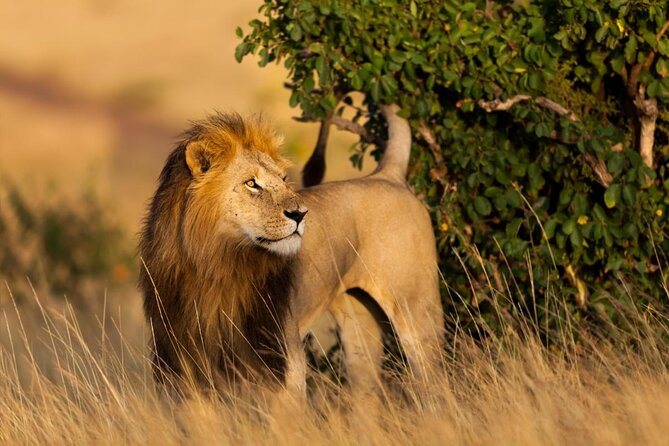

Imagine vast expansive plains with endless horizons, seas
of pale yellow grass rippling in the warm breeze,
gnarled acacias twisting to the sky and vultures circling
on thermals overhead. Our itineraries will give you suggestions for
what is possible when you travel in Serengeti National Park, and they
showcase routes we know work particularly well.
Mosi-oa-Tunya, (Victoria Falls)
Mosi-oa-Tunya.
Marvel at one of the largest and most spectacular waterfalls
in the world, known as the "Smoke that Thunders." This little sanctuary
is free from predators. This, in combination with it
being an area with man-made boundaries, guarantees a stable
population of wildlife throughout the year.
Pyramids of Giza, Egypt
Pyramids of Giza.
Step back in time and marvel at the ancient wonders of the world,
including the Great Pyramid of Giza.
Masai Mara National Reserve, Kenya

Masai Mara Reserve, Kenya.
Experience the thrill of safari and witness the
Big Five in the picturesque landscapes of Masai Mara.
The Masai Mara features a stunning kaleidoscope of wild and
rugged landscapes, warm and welcoming people and an exciting
array of creatures – big and small. .
Okavango Delta, Botswana
Okavango Delta, Botswana
Embark on a mokoro ride and explore the unique ecosystem of
this inland delta, home to a diverse array of wildlife.
Okavango Delta, Botswana
Okavango Delta, Botswana
Embark on a mokoro ride and explore the unique ecosystem of
this inland delta, home to a diverse array of wildlife.